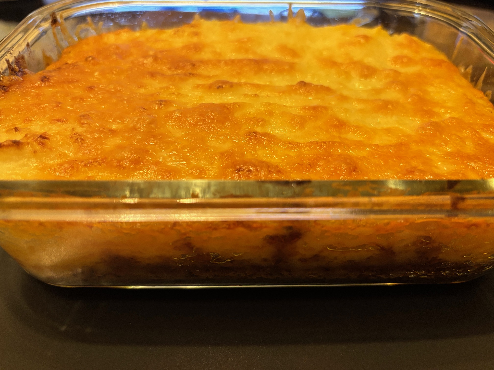

Cottage Pie

A hearty, meaty potato pie
When the winter months roll around, there's nothing better than a cottage pie. A rich beef filling topped with cheesy mash, this simple dish can be brought together in an hour, including cooking time.
Ingredients
- 500g beef mince (15% fat)
- 1 large onion
- 2 carrots
- 3 cloves of garlic
- Bay leaf
- Mixed herbs
- Tomato puree
- Beef stock
- 300g mashed potato
- 150g grated cheddar cheese
Steps
- Fry the beef, carrot and onion together until mince is browned
- Add the garlic, tomato puree and mixed herbs and sautee for 2 minutes
- Add the beef stock and bring the pot to a simmer
- Allow the mixture to reduce, stirring occasionally
- When the mince mixture has thickened, add to a baking dish and top with the mashed potato and grated cheese
- Bake at 180c for 35 minutes, or until the cheese has turned golden brown
- Allow to rest for 10 minutes before cutting and serving
Home